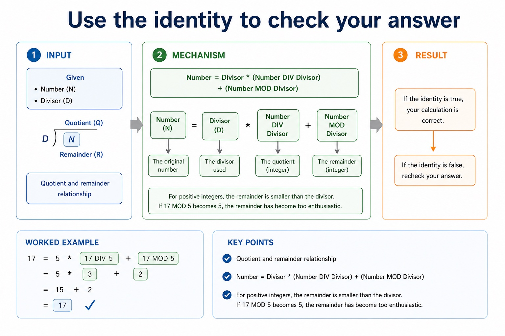
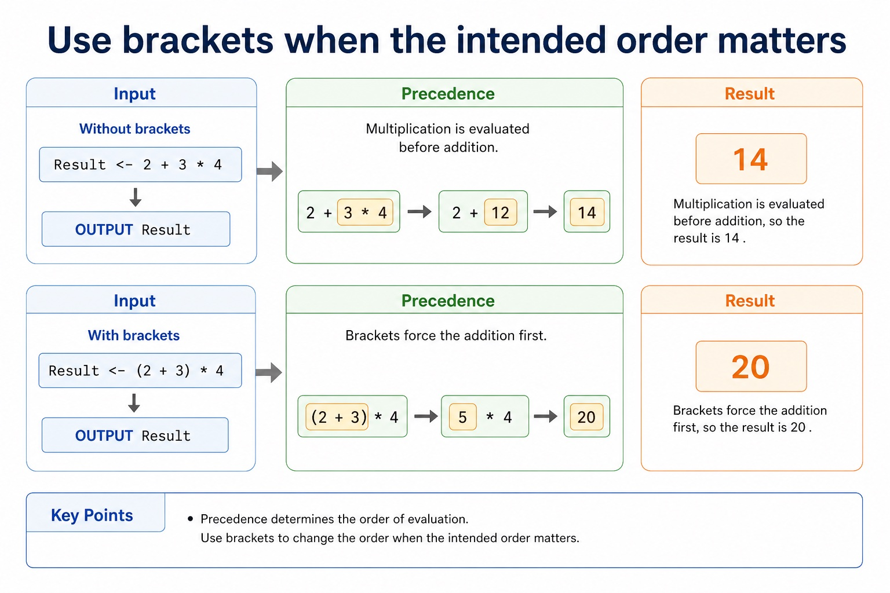
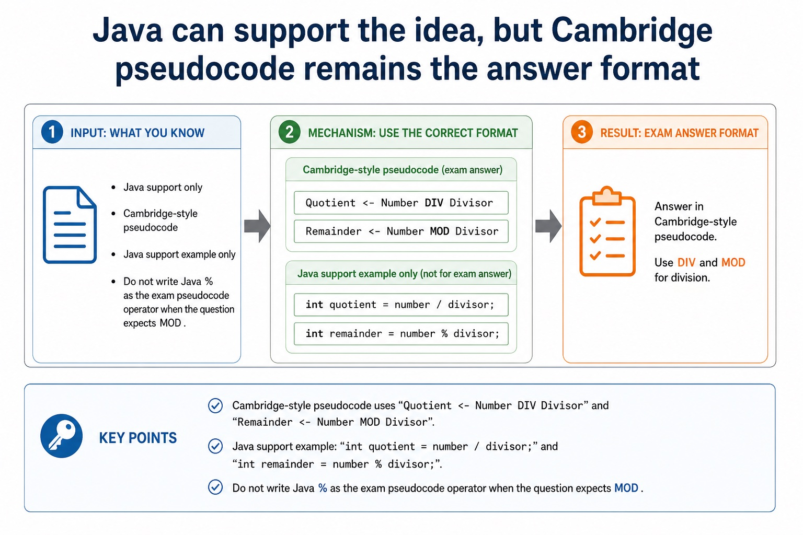
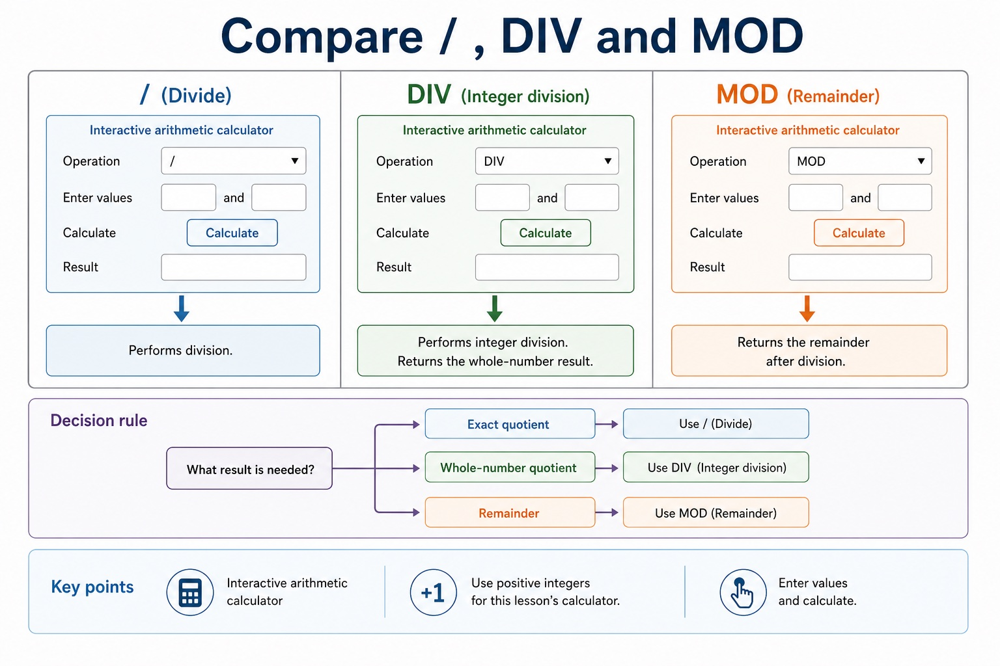

Arithmetic operators let algorithms calculate values. Most are familiar: addition, subtraction,
multiplication and division. The exam trap is usually DIV and MOD. If
17 DIV 5 is 3, then 17 MOD 5 is 2. The remainder is
not a rounding error; it is the bit of the pizza that did not fit evenly into boxes.
Calculateresults for +, -, *, /, DIV and MOD
Traceexpressions using quotient, remainder and precedence
ApplyDIV and MOD in validation, digit extraction and time conversion
17 DIV 53whole groups
17 MOD 52remainder
17 = 5 * 3 + 2identitycheck your trace
When the answer looks suspicious, rebuild the original number from divisor, quotient and remainder.
Why this matters
Paper 2 trace questions use DIV and MOD for parity checks, digit extraction, time conversion and array grouping.
Common trap
17 / 5, 17 DIV 5 and 17 MOD 5 are three different operations.
Warm-up hook
Seventeen students. Five seats per row.
How many full rows, and how many students are left in the not-quite-full row?
Operators combine values to calculate a result: source-grounded visual explanation.
Lesson fact: Arithmetic operators
Lesson fact: Operator
Lesson fact: addition
Lesson fact: 7 + 3 = 10
Lesson fact: subtraction
Lesson fact: 7 - 3 = 4
Lesson fact: multiplication
Lesson fact: 7 * 3 = 21
Lesson fact: real division
Lesson fact: 7 / 2 = 3.5
Lesson fact: integer quotient
Lesson fact: 7 DIV 2 = 3
Integer division
DIV returns the whole-number quotient
Cambridge-style pseudocode
Students <- 17
SeatsPerRow <- 5
FullRows <- Students DIV SeatsPerRow
OUTPUT FullRows
Trace
17 / 53.4
17 DIV 53
Meaningthree complete groups of five
DIV returns the whole-number quotient
DIV returns the whole-number quotient: source-grounded visual explanation.
Lesson fact: Integer division
Lesson fact: Cambridge-style pseudocode
Lesson fact: Students <- 17
Lesson fact: SeatsPerRow <- 5
Lesson fact: FullRows <- Students DIV SeatsPerRow
Lesson fact: OUTPUT FullRows
Lesson fact: 17 / 5 3.4
Lesson fact: 17 DIV 5 3
Lesson fact: Meaning three complete groups of five
MOD
MOD returns the remainder
Cambridge-style pseudocode
Students <- 17
SeatsPerRow <- 5
LeftOver <- Students MOD SeatsPerRow
OUTPUT LeftOver
Trace
17 DIV 53 full groups
3 * 515 used
17 MOD 52 left over
MOD returns the remainder
MOD returns the remainder: source-grounded visual explanation.
Lesson fact: Cambridge-style pseudocode
Lesson fact: Students <- 17
Lesson fact: SeatsPerRow <- 5
Lesson fact: LeftOver <- Students MOD SeatsPerRow
Lesson fact: OUTPUT LeftOver
Lesson fact: 17 DIV 5 3 full groups
Lesson fact: 3 * 5 15 used
Lesson fact: 17 MOD 5 2 left over
Quotient and remainder relationship
Use the identity to check your answer
Number = Divisor * (Number DIV Divisor) + (Number MOD Divisor)Example: 17 = 5 * (17 DIV 5) + (17 MOD 5) = 5 * 3 + 2
For positive integers, the remainder is smaller than the divisor. If 17 MOD 5 becomes 5, the remainder has become too enthusiastic.
Use the identity to check your answer

Use the identity to check your answer: source-grounded visual explanation.
Lesson fact: Quotient and remainder relationship
Lesson fact: Number = Divisor * (Number DIV Divisor) + (Number MOD Divisor)
Lesson fact: Example: 17 = 5 * (17 DIV 5) + (17 MOD 5) = 5 * 3 + 2
Lesson fact: For positive integers, the remainder is smaller than the divisor. If 17 MOD 5 becomes 5 , the remainder has become too enthusiastic.
Precedence
Use brackets when the intended order matters
Without brackets
Result <- 2 + 3 * 4
OUTPUT Result
Multiplication is evaluated before addition, so the result is 14.
With brackets
Result <- (2 + 3) * 4
OUTPUT Result
Brackets force the addition first, so the result is 20.
Use brackets when the intended order matters

Use brackets when the intended order matters: source-grounded visual explanation.
Lesson fact: Precedence
Lesson fact: Without brackets
Lesson fact: Result <- 2 + 3 * 4
Lesson fact: OUTPUT Result
Lesson fact: Multiplication is evaluated before addition, so the result is 14 .
Lesson fact: With brackets
Lesson fact: Result <- (2 + 3) * 4
Lesson fact: Brackets force the addition first, so the result is 20 .
Common patterns
DIV and MOD often appear in practical algorithm tasks
Even / oddNumber MOD 2 = 0 means even.Digit extractionNumber MOD 10 gives the last digit of a positive integer.Time conversionMinutes DIV 60 gives hours; Minutes MOD 60 gives remaining minutes.
DIV and MOD often appear in practical algorithm tasks
DIV and MOD often appear in practical algorithm tasks: source-grounded visual explanation.
Lesson fact: Common patterns
Lesson fact: Even / odd Number MOD 2 = 0 means even.
Lesson fact: Digit extraction Number MOD 10 gives the last digit of a positive integer.
Lesson fact: Time conversion Minutes DIV 60 gives hours; Minutes MOD 60 gives remaining minutes.
Java support only
Java can support the idea, but Cambridge pseudocode remains the answer format
Cambridge-style pseudocode
Quotient <- Number DIV Divisor
Remainder <- Number MOD Divisor
Java support example only
int quotient = number / divisor;
int remainder = number % divisor;
Do not write Java % as the exam pseudocode operator when the question expects MOD.
Java can support the idea, but Cambridge pseudocode remains the answer format

Java can support the idea, but Cambridge pseudocode remains the answer format: source-grounded visual explanation.
Lesson fact: Java support only
Lesson fact: Cambridge-style pseudocode
Lesson fact: Quotient <- Number DIV Divisor
Lesson fact: Remainder <- Number MOD Divisor
Lesson fact: Java support example only
Lesson fact: int quotient = number / divisor;
Lesson fact: int remainder = number % divisor;
Lesson fact: Do not write Java % as the exam pseudocode operator when the question expects MOD .
Interactive arithmetic calculator
Compare /, DIV and MOD
Use positive integers for this lesson's calculator.
Enter values and calculate.
Compare / , DIV and MOD

Compare / , DIV and MOD: source-grounded visual explanation.
Lesson fact: Interactive arithmetic calculator
Lesson fact: Use positive integers for this lesson's calculator.
Lesson fact: Operation
Lesson fact: Enter values and calculate.
Operator chooser
Which arithmetic operator fits the task?
Select a scenario to see the operator and exam reasoning.
Pick a scenario.
Worked examples
Trace quotient, remainder and final value
Practice with instant checking
Short calculations, exact values
Type the numeric result or the requested operator keyword.
Mistake debugging
Find the exact arithmetic error
Exam-style questions
Answer first, then expand the MS
Questions are original Cambridge-style practice. MS notes are strict about quotient, remainder and operator wording.
Summary
Three rules to keep
/real division, such as 17 / 5 = 3.4.
DIVinteger quotient, such as 17 DIV 5 = 3.
MODremainder, such as 17 MOD 5 = 2.
Homework
Calculate, trace, apply
Complete a table for 23 / 6, 23 DIV 6 and 23 MOD 6. Show the identity check.
Write pseudocode that inputs TotalMinutes and outputs whole hours and remaining minutes.
Trace Result <- 4 + 18 MOD 5 * 2, then rewrite it with brackets to make the intended order obvious.
Answer a 4-mark question explaining why MOD is useful for checking whether an integer is even.
Marking focus: name the operator, calculate the value, and explain what the value represents in the scenario.